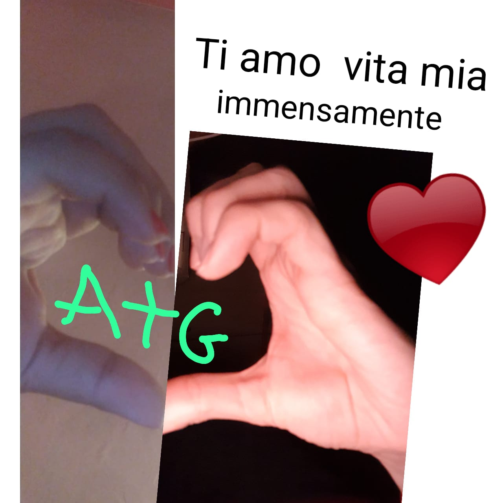

Felices 2 años y 1 mes junto a mi compañera de vida, gracias por todas las cosas extraordinarias que haces por mí, gracias por transformar cada día en un baño infinito de felicidad y me das tu precioso amor y como un niño proteges. yo mientras me sostienes en tus infinitos brazos lejos de todo mal! Un mes más ha pasado volando y amo cada momento de haberlo pasado contigo, porque cada momento es extraordinario y único y juntos sabemos afrontar cada día unidos porque somos uno mientras nuestros corazones que cada latido están sincronizados. y como por arte de magia une nuestras almas para enfrentar y vencer juntos cada desafío y disfrutar juntos cada momento increíble que conservamos en nuestro corazón. Estoy orgulloso de ti alma mía y admiro cómo te comprometes con tu trabajo y estudio y admiro cómo ayudas a las personas que están cerca de ti, cómo te esfuerzas por ayudar a tu madre todos los días a comprar la alfombra para hacerla. perder peso y podremos alcanzar nuestra meta lo antes posible porque cada día eres el número uno en todo el universo y me encanta estar aquí a tu lado y ayudarte y apoyarte, porque con la fuerza de tu increíble corazón y todo de ti mismo no lo sabes ¡Nunca te rindas y gana todos los desafíos! Me encanta ser tu fan número uno y te animaré en cada momento y siempre recordaré que siempre estoy aquí en tu corazón y a tu lado y me encanta ayudarte con todo mi ser, porque una persona increíble como tú merece sólo y sólo todas las cosas hermosas y únicas que el universo y la tierra ofrecen. Recuerda en los momentos de dificultad, cierra los ojos y escucha dentro de ti, estoy dentro de ti para hacerte levantar y como la fuerza de un avión sabemos reiniciar juntos más fuertes que antes y como cada día me enseñas juntos somos capaces. ¡Para ganar y superar cada desafío! ¡Gracias cada día por estar aquí a mi lado y enseñarme cosas nuevas que guardo dentro de mí para mejorar junto a vosotros cada día! Gracias por permitirme cerrarme en tus brazos con seguridad mientras te sostengo los ojos con fuerza para pasar la noche juntos mientras te encuentro en mis sueños donde como un ángel de la guarda proteges mi sueño y suavemente me haces despertar y cada mañana tengo suerte. ¡Basta con admirar el panorama más hermoso que Dios jamás haya creado, tu dulce sonrisa que me hace comenzar mi día con plenitud y me da fuerza y energía para vivir nuevas aventuras juntos! ¡Felices 2 años y 1 mes juntos de parte de tu ratoncito mimado! ¡Que Dios te bendiga cada día, eres la persona más increíble, extraordinaria y única en todo el universo! ¡Te amo inmensamente desde el fondo de mi corazón que cada latido está dedicado a ti y cada momento existe gracias a ti que me das vida con tu precioso y único amor especial más que cualquier piedra preciosa que exista! ¡Te amo infinitamente mente, alma y cuerpo que existen a cada momento para protegerte y acogerte en mi abrazo y darte mi amor y protegerte lejos de todo mal! Te amo ilimitadamente, tú que eres mi vida, mi oxígeno, mi reina, mi cuerpo, mi alma, todo lo que conforma mi cuerpo y mi alma, ¡mi todo! ¡Gracias por existir, ayúdame en la vida! A+G+GIOAN = ¡hoy, por siempre y más allá!
